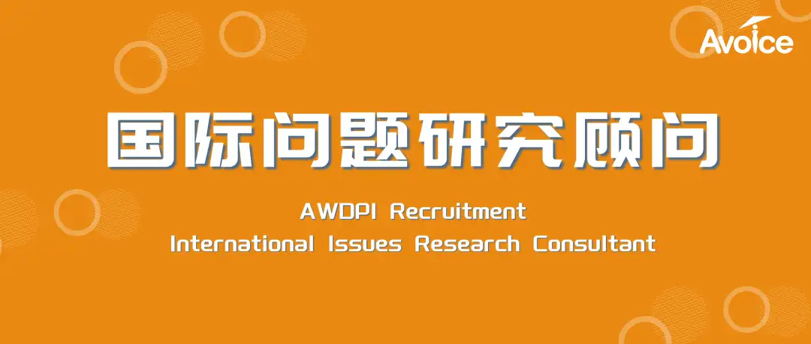
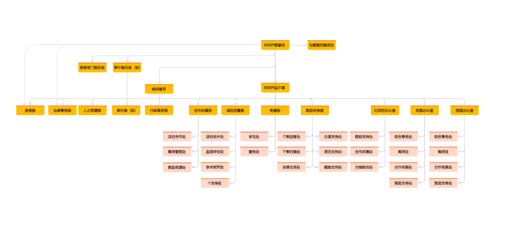
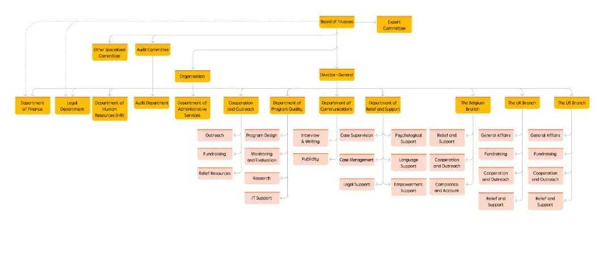
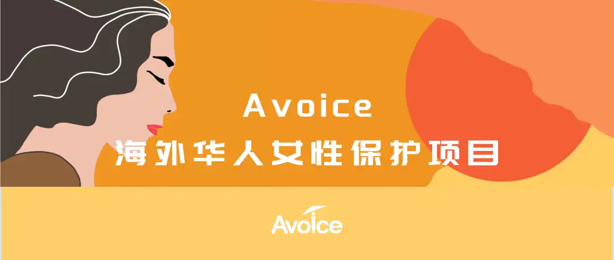
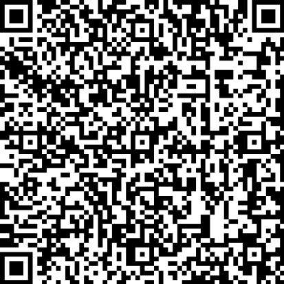

01 关于我们
AWDPI亚裔女性国际发展计划（Asian Women Development Plan International）是一家国际公益组织，由2020年成立的Avoice海外华人女性保护项目（Against Violence to Overseas Chinese Women Program）发展而来，致力于消除针对海外亚裔女性的歧视和性别暴力，并促进她们的赋能与发展。
AWDPI (Asian Women Development Plan International) is an international non-profit organization. Originating from the Avoice (Against Violence to Overseas Chinese Women Program), established in 2020, AWDPI is dedicated to eliminating discrimination and gender-based violence against Asian women overseas and get them empowered and well-developed.
AWDPI在欧洲、北美和亚太的多个国家和地区开展工作，并在英国、比利时和美国设立国家办公室团队，目前已与各界建立了广泛的合作网络，包括联合国系统组织、各国政府相关部门、国际组织、跨国公司以及学术机构。
AWDPI operates in various countries and regions across Europe, North America, and the Asia-Pacific with national office and teams in the United Kingdom, Belgium, and the United States. It has established a wide cooperation network, including organizations within the United Nations system, relevant public sector of various countries, international organizations, multinational corporations, and academic institutions.
AWDPI倡导对海外亚裔女性的生存困境的关注，并为她们提供持续的保护和支持。希望令海外亚裔女性在社会、经济、文化、教育等方面获得更多发展机会，帮助她们从弱势群体成长为推动社会进步的重要力量。
AWDPI calls for attention to the living conditions of Asian women overseas and provides them with ongoing protection and support. We aim to offer more opportunities for Asian women overseas in social, economic, cultural, and educational aspects, helping them grow from vulnerable groups into a vital force pushing for social progress.
AWDPI组织架构：
Organizational structure of AWDPI:


欢迎通过以下链接了解更多关于 AWDPI/Avoice的信息：
Welcome to learn more about AWDPI/Avoice through the following links：

AWDPI亚裔女性国际发展计划介绍
Introduction to AWDPI (Asian Women Development Plan International)

Avoice海外华人女性保护项目介绍
Introduction to Avoice (Against Violence to Overseas Chinese Women Program)
（文内联系邮箱已更新为[email protected]。The contact email within the linked article has been updated to [email protected].）

Avoice影响力报告
Avoice Impact Report
（文内联系邮箱已更新为[email protected]。The contact email within the linked article has been updated to [email protected].）
02 招聘信息
招聘职位：国际问题研究顾问（全职、兼职不限）
Position: International Issues Research Consultant
地点：无限制，可远程办公，也可在中国上海办公
Location: no limitations. Shanghai, China or remote.
合同周期：12个月，可视情况延长合同期
Contract Period: 12 months, extension possible depending on circumstances.
薪资：面议
Salary: Negotiable
【岗位职责】
参与制定机构的学术研究计划、研究选题等；
协助实施学术研究计划，协调外部资源，满足研究需求，解决研究过程中可能出现的问题；
协助开展学术研究活动，并参与相关报告的撰写；
对学术研究处提供技术支持和指导，保障研究成果和报告的质量；
与国际、国内的相关专家和机构建立伙伴关系，加强对国际交流合作资源的有效动员和使用。
Job Responsibilities
Participate in designing the institution's academic research plans and research topics;
Assist in implementing academic research plans, coordinating external resources to meet research needs, and addressing potential issues in research;
Assist in conducting academic research activities and participating in writing corresponding reports;
Provide technical support and guidance to the academic research department to ensure the quality of research results and reports;
Establish partnerships with domestical and international experts and institutions in this field, enhancing the effective mobilization and utilization of international exchange and cooperation resources.
【任职要求】
学历不限，国际知名高校毕业者优先；
有一年以上国际非政府组织工作经验；
在“中国非政府组织海外发展经验”“国际人权及少数族裔权益保护与倡导”等方面有相关经验；
英语听说读写流利，中文能简单交流即可；
海外留学生及外籍人员优先；
能接受紧急的学术研究任务；
能够在面对复杂情况时，独立解决问题。
Requirements
No specific educational requirement; graduates from internationally renowned universities preferred;
Over 1 year of working experience in international NGOs;
Experience in "Overseas Development of Chinese NGOs" or "International Human Rights and Minority Ethnic Rights Protection and Advocacy" is preferred;
Fluent in English listening, speaking, reading, and writing; beginner in Chinese are acceptable;
International students or English native speakers are preferred;
Available for urgent academic research tasks;
Able to independently solve problems in complex situations.
03 招聘流程

请通过扫描上方二维码或点击文末“阅读原文”填写招募表单。
招募流程：
提交简历
简历筛选
面试
录取通知
截止日期：本招聘长期有效，直到招到合适的人选为止。
温馨提示：关于招募的任何问题请咨询[email protected]，邮件主题请以「AWDPI顾问招募」或「AWDPI consultant recruitment」为开头。
Please fill out the recruitment form by scanning the QR code above or clicking the "阅读原文" link at the end of the text.
The recruitment process consists of submitting resumes, resume screening, interviews, acceptance notification.
Deadline: This recruitment is valid until suitable candidates are recruited.
Useful hint: For any questions regarding recruitment, please consult [email protected]. Please use "AWDPI Consultant Recruitment" as the subject line of your email.
信息来源 I Avoice Team
排版 I 戴翰林